L’ouverture écossaise commence par 1. e4 e5 2. Cf3 Cc6 3. d4. Les Blancs contestent immédiatement le pion e5 avec leur pion d. Après …exd4, ils peuvent reprendre par Cxd4. L’objectif est d’obtenir de l’espace et des lignes pour les pièces, sans sortir la dame trop tôt.
- Avec les Blancs
- 1. e4 e5 2. Cf3 Cc6 3. d4
- Repère ECO : C45
Certaines ouvertures préparent longtemps l’action centrale. L’Écossaise vous fait observer un échange de pions dès les premiers coups. Elle permet de travailler une question très concrète : avec quelle pièce reprendre, et que devient le centre après l’échange ?
Elle convient à un joueur qui souhaite des positions plus ouvertes après 1. e4 e5. Elle ne s’impose pas si les Noirs ont choisi une autre défense dès leur premier ou deuxième coup.
À retenir avant de jouer
- Votre objectif
- Ouvrir le centre tôt et donner une activité immédiate aux pièces.
- La décision au centre
- Après d4 exd4, reprendre avec le cavalier et surveiller les pressions sur d4 et e4.
- Le point de vigilance
- Une reprise immédiate Dxd4 laisse la dame en prise au cavalier c6.
Dans ce guideChoisissez votre point de départ
Sur l’échiquier
Les premiers coups, un à un
Dans la notation française, C = cavalier, F = fou, D = dame et O-O = petit roque. T = tour et R = roi. Le signe x indique une capture, + un échec et # un mat. Les points de suspension indiquent un coup des Noirs.
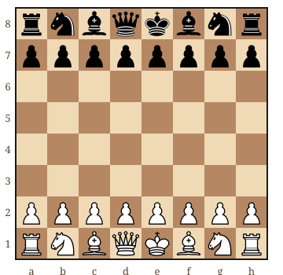
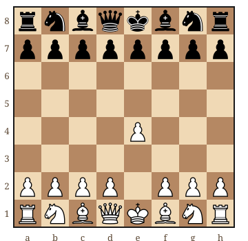
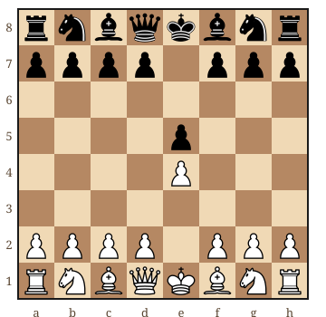
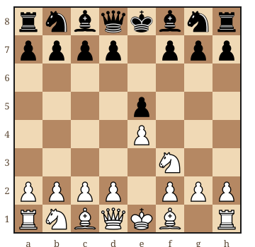
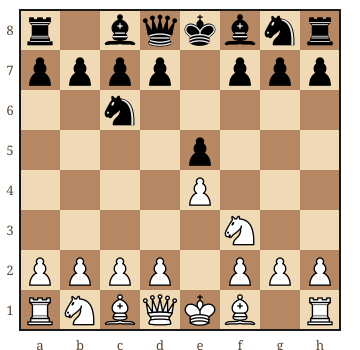
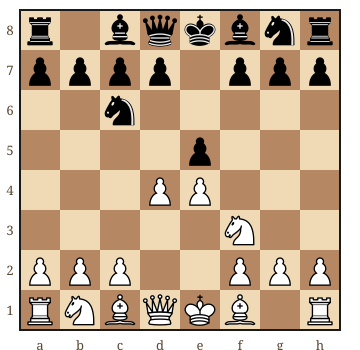
Ce que chaque coup accomplit
- 1. e4
Le pion blanc avance au centre.
- 1…e5
Le pion noir lui fait face en e5.
- 2. Cf3
Le cavalier attaque e5 et quitte sa case de départ.
- 2…Cc6
Les Noirs développent leur cavalier et défendent e5.
- 3. d4
Le pion d4 attaque e5 : le centre peut s’ouvrir par un échange.
Votre fil conducteur
Trois idées à garder en tête
Comprendre l’échange central
Après …exd4, le pion noir a quitté e5. Observez les colonnes qui s’ouvrent et les nouvelles cases accessibles aux pièces.
Reprendre avec une pièce utile
Cxd4 ramène le cavalier au centre. La dame reste à l’abri des attaques de développement qui peuvent suivre une sortie trop précoce.
Développer autour du cavalier
Le cavalier d4 est actif mais peut être attaqué. Continuez le développement et vérifiez les menaces sur e4 au lieu de considérer le centre comme définitivement gagné.
Un exemple court pour comprendre le plan
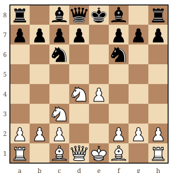
Cette courte suite montre l’idée : le cavalier reprend en d4, les Noirs attaquent e4 par …Cf6 et les Blancs développent Cc3 pour défendre ce pion. Le prochain objectif est de sortir un fou puis de mettre le roi en sécurité.
Deux réponses noires à reconnaître
3…exd4 : L’échange central
Le pion e5 capture en d4. Regardez la reprise Cxd4 et les pièces qui vont contrôler le centre.
Après Cxd4 : …Cf6 : Viser le pion e4
Les Noirs se développent en attaquant un pion. Défendre e4 peut se faire tout en développant une pièce, comme dans l’exemple avec Cc3.
Ce sont des repères pour vous orienter. Vous n’avez pas besoin de mémoriser leurs ramifications pour commencer à jouer.
Comprendre ce qui se joue
Lire le centre et la structure de pions
Le coup d4 met immédiatement les pions en contact. Après …exd4, le pion e noir quitte e5 pour capturer le pion d blanc. La reprise Cxd4 fait ensuite disparaître ce pion noir et centralise le cavalier. Il ne reste plus de pion blanc sur la colonne d, tandis que les Noirs conservent leur pion d7. Vous devez donc distinguer une colonne ouverte pour les deux camps d’une colonne seulement semi-ouverte.
Le cavalier d4 a gagné une case centrale, mais il n’est pas invulnérable. Le cavalier noir c6 l’attaque déjà ; une capture peut être suivie d’une reprise. Avant d’annoncer qu’un cavalier est en prise, comptez la séquence complète. Un échange de cavaliers n’est pas une perte de pièce si une reprise est possible et cohérente avec le reste de la position.
Le départ du cavalier f3 change aussi les équilibres autour d’e4. La poussée centrale n’a pas réglé la sécurité de tous vos pions. Après …Cf6, votre pion e4 est attaqué ; Cc3 peut le défendre en développant une autre pièce. Le fou f1 doit ensuite sortir pour que le roi puisse roquer. L’Écossaise reste une ouverture de développement, pas seulement un échange de pions.
Quelles cases chercher pour vos pièces ?
Ces placements sont des repères à vérifier dans la position, pas des coups à jouer sans regarder l’adversaire.
- Cavalier g1f3 puis d4 dans la reprise principale
- Cxd4 reprend le pion et occupe le centre. Après une attaque sur ce cavalier, calculez les échanges avant de le déplacer.
- Cavalier b1c3 dans l’exemple étudié
- Il défend e4 et développe l’aile dame. Sa case doit être choisie selon les autres pions présents.
- Fou f1une diagonale active, souvent c4 ou e2 selon les réponses
- La sortie du fou prépare le roque. La case exacte dépend des menaces sur d4 et de l’organisation noire.
- Dame d1rester en retrait tant que sa sortie n’est pas nécessaire
- Après …exd4, Dxd4 peut perdre la dame contre le cavalier c6. Une reprise de dame n’est pas interchangeable avec une reprise de cavalier.
- Roi et toursroquer, puis observer les colonnes centrales
- Une colonne semi-ouverte peut devenir un axe pour une tour. Il faut toutefois finir de développer les pièces avant de lui attribuer une cible.
Comment réagir aux idées adverses
Si les Noirs prennent en d4
Comparez les reprises légales et les cases contrôlées. Le cavalier c6 attaque d4 : reprendre avec la dame la place sur une case où elle peut être capturée. Avec Cxd4, une éventuelle capture noire porte sur un cavalier et s’inscrit dans une autre séquence d’échanges. Le matériel exposé n’est pas du tout le même.
Si les Noirs jouent …Cf6
Le pion e4 est attaqué. Cc3 fournit un défenseur et développe une pièce. Mais cette réponse doit être choisie dans une position où elle est légale et utile : regardez également les menaces éventuelles contre le cavalier d4 et votre roi.
Si les cavaliers s’échangent en d4
Ne comptez pas seulement la première capture. Identifiez la pièce qui reprend, les lignes ouvertes et le développement restant. Une dame centralisée après des échanges peut être acceptable dans une position précise ; cela ne justifie pas une reprise prématurée quand un cavalier adverse peut la prendre immédiatement.
Une décision concrète
Une reprise naturelle en apparence qui perd la dame
Les Blancs viennent de reprendre le pion d4 avec leur dame, alors que le cavalier noir se trouve déjà en c6. C’est une différence essentielle avec d’autres débuts où le cavalier n’est pas encore sorti.
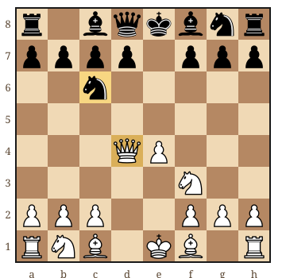
Quel coup noir capture immédiatement la dame blanche ?
Repérez d’abord les menaces et les cases contrôlées, puis proposez une réponse.
Lire l’analyse de la position
4…Cxd4 : le cavalier c6 peut aller en d4 et prendre la dame. Une reprise blanche ultérieure ne rendrait qu’un cavalier, pas la dame perdue. Dans la position précédente, 4. Cxd4 était la reprise de développement étudiée. La leçon est de vérifier les attaquants de la case d’arrivée avant de reprendre.
Comparer pour comprendre
Reprendre avec la dame : ce qui devient possible après l’échange des cavaliers
La reprise immédiate Dxd4 étudiée plus haut exposait la dame au cavalier c6. Il ne faut pas en tirer la règle « une dame ne reprend jamais au centre ». Une capture modifie les pièces présentes et les attaques : c’est la nouvelle position qui décide.
Dans cet atelier, les Blancs ont d’abord repris le pion avec Cxd4, puis les Noirs ont joué …Cxd4 avec leur cavalier c6. Les deux cavaliers concernés ont donc quitté leur trajet initial. La dame blanche peut maintenant reprendre la pièce en d4 : le cavalier qui pouvait la capturer n’est plus en c6.
Position commune de départ :
1. e4 e5 2. Cf3 Cc6 3. d4 exd4 4. Cxd4 Cxd4
Rejouez cette position, puis comparez les suites ci-dessous. Ce sont des exemples commentés : elles ne constituent pas deux recommandations équivalentes ni des coups à reproduire sans calculer.
Dxd4 : une reprise rendue possible par l’échange
5. Dxd4
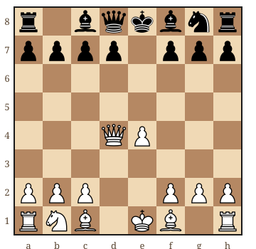
5. Dxd4 capture le cavalier noir qui vient d’arriver en d4. Les deux camps ont échangé un pion et un cavalier ; le matériel est équilibré. La dame blanche occupe le centre, mais elle n’est plus exposée à une capture immédiate par un cavalier c6, puisque celui-ci a disparu.
Cela ne prouve pas que tous les développements blancs sont terminés. Les fous doivent encore sortir et le roi doit être sécurisé. La dame centralisée est une conséquence de l’échange, pas une autorisation de la déplacer plusieurs fois sans raison.
…c5 puis De3 : une attaque de pion sur la dame
5. Dxd4 c5 6. De3
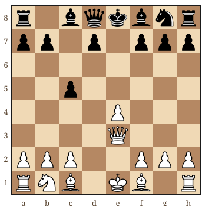
Dans la suite 5…c5 6. De3, le pion noir c5 attaque la dame d4 en diagonale. Les Blancs la déplacent sur une case libre. De3 est une retraite illustrative ; le point à comprendre est que les Noirs peuvent chercher un coup utile tout en gagnant un temps sur la dame.
Le matériel ne change pas dans cette suite, mais le rythme du développement change. Les Noirs ont joué un coup de pion et les Blancs un nouveau coup de dame. Il faut ensuite juger les pièces encore inactives et les possibilités de roque, plutôt que de déclarer la position gagnée pour l’un des camps.
Vérifiez votre compréhension
Pourquoi Dxd4 perdait-il la dame dans la première position mais pas ici ?
Dans la première position, le cavalier noir était encore en c6 et pouvait capturer d4. Ici, il a déjà pris le cavalier blanc en d4 et la dame le capture à son tour.
Après …c5, le pion noir attaque-t-il la dame en d4 ?
Oui. Un pion noir en c5 contrôle b4 et d4. La dame d4 doit tenir compte de cette attaque.
Un échange matériellement équilibré produit-il toujours la même activité ?
Non. Les pièces retirées, la position de la dame et les coups de développement encore nécessaires changent les possibilités des deux camps.
À appliquer dans vos parties : Pour chaque reprise, arrêtez-vous une seconde sur la nouvelle position. Demandez-vous quelle pièce a disparu et quelles attaques n’existent plus. Cette habitude évite aussi bien une perte de dame qu’une interdiction trop rigide de la développer.
Reconnaître les embranchements
Deux variantes à comprendre pour commencer
Ces lignes courtes montrent ce qui change dans le centre et le développement. Rejouez les coups, puis formulez le plan avec vos propres mots ; les réponses adverses peuvent vous amener à une autre position.
…Fc5 : attaquer le cavalier central
1. e4 e5 2. Cf3 Cc6 3. d4 exd4 4. Cxd4 Fc5 5. Fe3
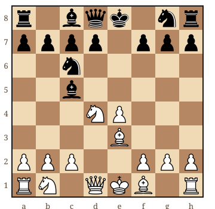
Le fou c5 attaque le cavalier d4. Les Blancs jouent Fe3 : ils développent une pièce et renforcent d4. Ce soutien ne rend pas la position immobile ; il crée aussi la possibilité d’échanges entre les fous.
Le plan à comprendre : Avant chaque coup de développement, recomptez les attaquants de d4. Les Blancs cherchent à conserver leur activité centrale ; les Noirs veulent faire travailler ce cavalier ou le remplacer par une pièce moins active. Le roque dépend ensuite de la sortie du fou f1.
…Cf6 : prendre e4 pour cible
1. e4 e5 2. Cf3 Cc6 3. d4 exd4 4. Cxd4 Cf6 5. Cc3
Le cavalier noir f6 attaque e4. Avec Cc3, les Blancs défendent ce pion tout en développant leur dernière pièce de l’aile dame. Le centre ouvert rend les menaces sur les pièces particulièrement importantes.
Le plan à comprendre : Les Noirs peuvent envisager …Fb4 pour augmenter la pression sur le cavalier c3. Les Blancs doivent alors regarder leur roi e1 avant de déplacer ce cavalier : un clouage peut modifier sa capacité à défendre e4 en pratique.
Calculer avant de jouer
Piège et vigilance : Une dame prise par le cavalier oublié
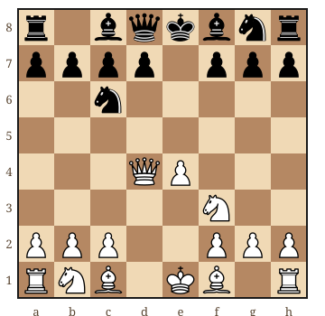
1. e4 e5 2. Cf3 Cc6 3. d4 exd4 4. Dxd4
Avant de lire la suite, repérez les échecs, les captures et les pièces attaquées.
Voir la suite et le mécanisme
4… Cxd4
La dame d4 se trouve sur une case contrôlée par le cavalier c6. Les Noirs peuvent la prendre immédiatement. Ce n’est pas seulement une sortie de dame trop précoce : c’est une perte concrète de neuf points de dame contre aucune pièce dans ce coup. Le contrôle de d4 était visible avant la reprise.
Comment éviter le problème ou y répondre
Reprenez avec 4. Cxd4 dans cette position. Après un échange ultérieur des cavaliers sur d4, une reprise de dame pourra devenir possible, car le cavalier c6 aura disparu. Le même mouvement de dame peut donc être une faute dans un ordre de coups et être légalement sûr dans un autre.
Suite de référence à rejouer depuis le début :
1. e4 e5 2. Cf3 Cc6 3. d4 exd4 4. Cxd4
Passer de l’ouverture au milieu de partie
Après les échanges centraux, choisissez une case pour votre fou f1 et sécurisez le roi. Le milieu de partie commence avec des pièces plus libres, mais aussi des lignes qui peuvent atteindre plus vite votre position. Repérez la colonne où votre adversaire n’a plus de pion et les pions qui sont devenus des cibles.
Pour analyser une partie d’Écossaise, notez séparément les captures centrales et les coups de développement. Si vous avez passé plusieurs coups à déplacer la dame pendant que les fous restaient bloqués, vous avez identifié un objectif de travail concret.
Le nom et ses origines
D’où vient le nom « ouverture écossaise » ?
Le nom vient du match par correspondance disputé entre les clubs de Londres et d’Édimbourg de 1824 à 1828. Son adoption par les joueurs d’Édimbourg a contribué à attacher le nom écossais à cette suite.
L’ouverture ne naît pourtant pas au début de ce match : Ercole del Rio l’avait déjà analysée dans un traité de 1750. Il faut distinguer l’ancienneté des coups et l’épisode qui a popularisé leur nom.
Au XIXe siècle, les coups d’une partie par correspondance étaient transmis à distance. Le mot « écossaise » raconte cet épisode, pas une règle particulière du jeu.
Les erreurs à éviter dans cette ouverture
Sortir la dame par réflexe
Après 3…exd4, 4. Dxd4 place la dame sur une case attaquée par le cavalier c6 : …Cxd4 peut la capturer immédiatement. La reprise 4. Cxd4 étudiée ici ne doit pas être confondue avec elle.
Laisser e4 sans défense
Le départ du cavalier f3 ne rend pas tous les pions intouchables. Sur …Cf6, repérez l’attaque contre e4.
Pousser les pions sans développer
Ouvrir le centre donne des lignes aux deux camps. Si vos pièces restent sur la première rangée, l’ouverture des lignes peut aussi aider l’adversaire.
À vous de jouer
Un exercice pour vérifier l’idée
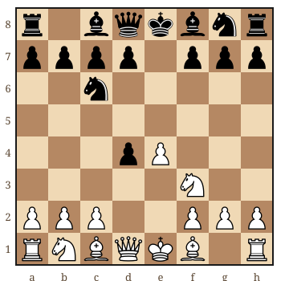
Quel coup reprend le pion d4 tout en centralisant une pièce légère ?
Prenez quelques secondes pour choisir et expliquer votre coup.
Voir la réponse expliquée
4. Cxd4 : le cavalier f3 reprend en d4. La dame reste sur sa case et le cavalier participe directement au contrôle du centre. Après une réponse comme …Cf6, il faudra encore surveiller e4.
Votre prochaine séance de pratique
- Rejouez …exd4 et Cxd4 en nommant chaque pion ou pièce déplacé.
- Avant et après l’échange, comparez les colonnes d et e.
- Après …Cf6, trouvez la menace sur e4 puis une réponse de développement.
Besoin de comprendre vos propres parties ? Les cours d’échecs permettent de travailler à partir de vos positions.
Quelles ouvertures comparer ensuite ?
- Ouverture italienne : les premiers coups expliqués simplement
Comparer d4 immédiat à un développement où cette poussée se prépare.
- Ouverture espagnole : premiers coups et plans pour débuter
Étudier une pression centrale plus progressive.
Retrouver les onze ouvertures et choisir votre prochaine fiche.
Questions fréquentes
Quels coups définissent l’Écossaise ?
La position caractéristique apparaît après 1. e4 e5 2. Cf3 Cc6 3. d4. Le pion d attaque immédiatement le pion noir e5.
Pourquoi appelle-t-on cette ouverture écossaise ?
Son nom est lié au match par correspondance Londres–Édimbourg de 1824 à 1828. La suite avait déjà été étudiée avant ce match, notamment par del Rio en 1750.
Faut-il reprendre d4 avec la dame ?
Après 1. e4 e5 2. Cf3 Cc6 3. d4 exd4, la reprise 4. Dxd4 permet …Cxd4 : le cavalier noir c6 peut capturer la dame. La reprise 4. Cxd4 centralise un cavalier sans exposer la dame de cette manière.